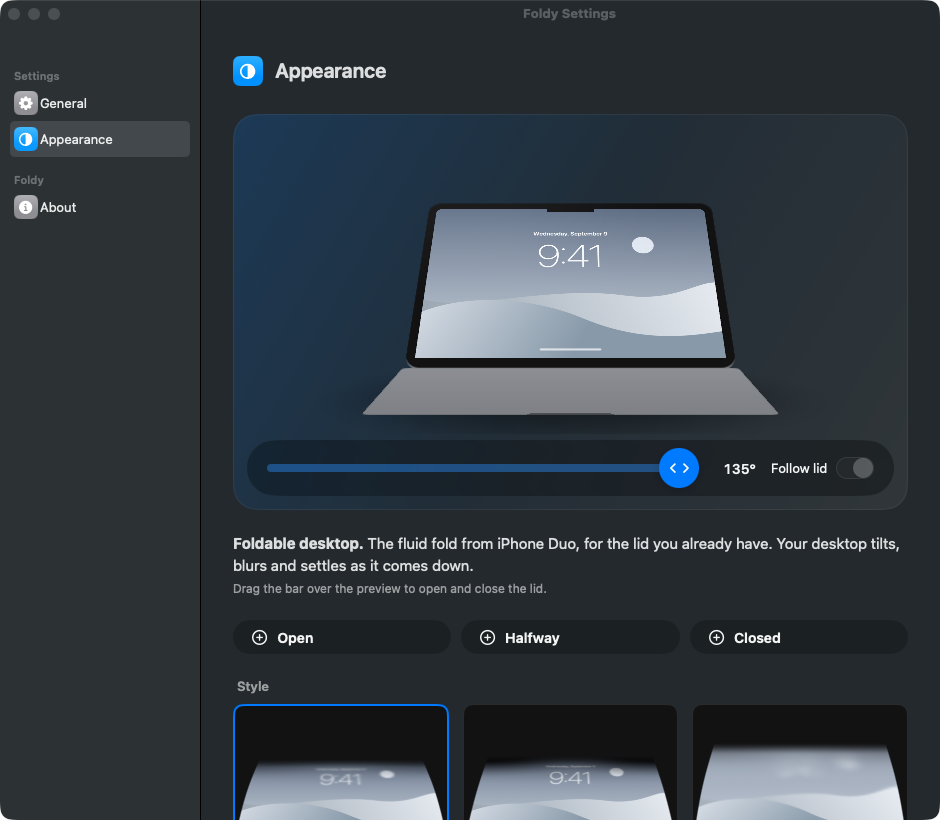

0 bends this visit
Your desktop bends as you close the lid.
The fluid fold from iPhone Duo, for the lid you already have. Your desktop tilts, blurs and settles as it comes down.
Download FoldyFree
Or build it yourself: git clone, then make app. One menu bar icon, no account, no license key.
Needs an Apple silicon MacBook with a lid angle sensor and macOS 14 or later. Every frame is drawn with Metal on your Mac and never leaves it.
Take a closer look
Foldable desktop. Offers the fluid fold of iPhone Duo in a Mac you already own. The base of the desktop stays put; the top folds away, blurs and falls into shadow.
Drag below to open and close135° · lid angle

How it works
- Lid sensor
- Reads the hinge angle from the Mac's own sensor over HID. It listens for reports and polls only while the lid is moving; no accessibility hacks.
- Live desktop
- Captures the screen with ScreenCaptureKit and renders the tilt with Metal, so windows and wallpaper move together. The overlay excludes itself from the capture.
- Three styles
- Silk, Shade and Frost. Tune perspective, blur, shadow and bend, or set the angle where it clears.
- Bend
- Not just a tilt: the sheet curls from the hinge, so the base stays put and only the upper part folds back, like a page. The demo above runs the same shader in WebGL.
- Sound
- A soft click when the lid opens and the desktop clears. Synthesised on the spot; switch it off in General.
- Menu bar
- Lives quietly in the menu bar. Pause with a click or Esc, or run the fold on demand with Try It Now.
Requirements
- macOS
- 14 Sonoma or later.
- Hardware
- Apple silicon MacBook with a lid angle sensor. The 2019 16-inch MacBook Pro has one too.
- Permissions
- Screen Recording, so the desktop can be captured. Without it Foldy folds a sample wallpaper instead.
Private by design
- On device
- Frames go from the capture straight to the GPU. Nothing is recorded, saved or uploaded; the app has no network code at all.
- No account
- Free and open source under the MIT license. Download the app or build it from source; there is no key to enter and no email to give.